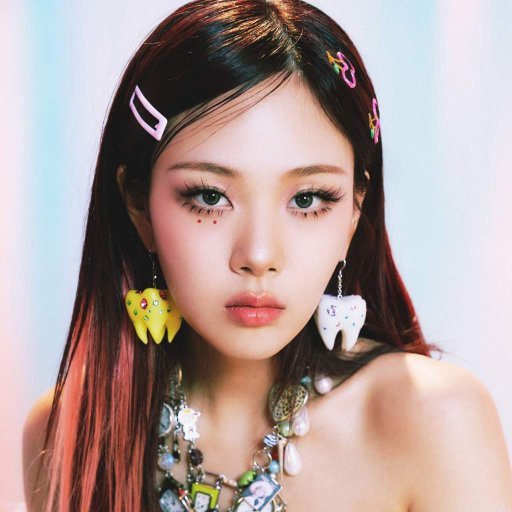

Bibi

Kim Hyung-soo (em coreano: 김형서 (hangul) / 金亨瑞 (hanja); romaniz.: Gim Hyeong-seo (Romanização revisada); Kim Hyŏngsŏ (McCune–Reischauer); nascida em Ulsan, Coreia do Sul, em 27 de setembro de 1998), conhecida profissionalmente como BIBI (em coreano: 비비; romaniz.: Bi-bi (Romanização revisada); estilizado em letras maiúsculas), é uma cantora-compositora, produtora musical, atriz e rapper sul-coreana. Em 2017, ela assinou um contrato com a gravadora Feel Ghood Music após Yoon Mi-rae descobrir as músicas que ela produzia no SoundCloud
Biografia
Pré-estreia
Bibi nasceu em Ulsan e passou a adolescência em Changwon. Ela se sentia envergonhada ao falar com pessoas, então começou a escrever músicas sobre não conseguir falar o que queria aos seus 15 anos.
Bibi era conhecida como "Nakedbibi" no SoundCloud. O signficado do nome vem da palavra "baby", que soa como "bibi" quando pronunciada rapidamente, e que bebês recém-nascidos não vestem roupa alguma e têm uma aparência natural imutável. Segundo Bibi, seu nome profissional atual define sua vontade de mostrar sua a versão mais honesta.
Em seu SoundCloud, Bibi é conhecida por produzir músicas de diversos gêneros, incluindo R&B, soul, hip-hop e baladas. Ela se inspira em suas experiências e sentimentos.
Carreira
Bibi apareceu como uma competidora no show The Fan da emissora SBS, onde ela terminou em segundo lugar. Ela estreiou oficialmente com o single "Binu" em 15 de maio de 2019.
Em abril de 2021, ela lançou o EP Life is a Bi.... Em outubro, ela lançou o single "The Weekend" em parceria com a 88rising, posteriormente alçancando o vigésimo nono lugar no Top 40 da Mediabase, fazendo de Bibi a primeira artista solo coreana a realizar tal feito. Em dezembro, ela assinou um contrato de promoção global com a 88rising. Em 2022, ela lançou seu álbum de estreia Lowlife Princess: Noir.